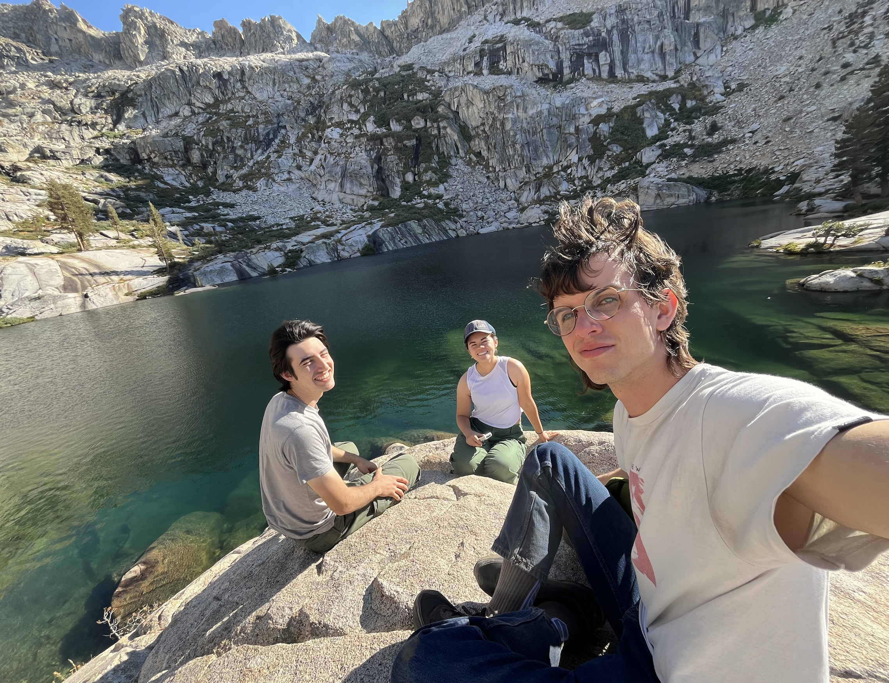
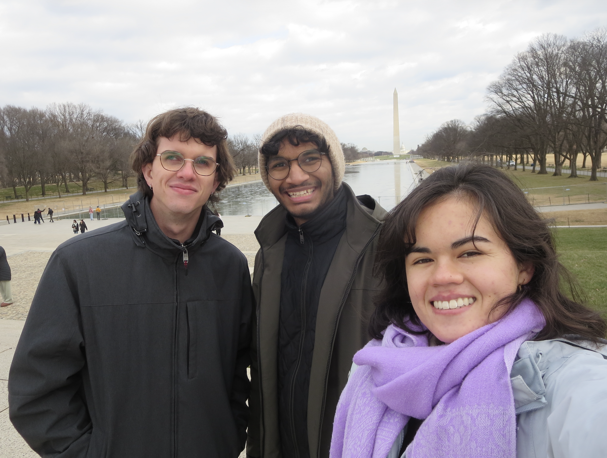
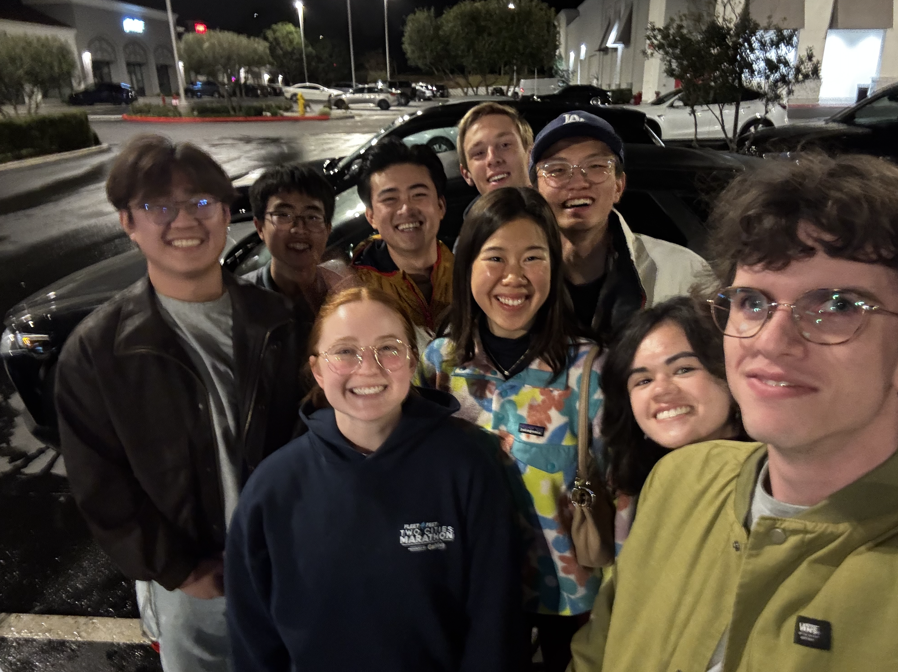

Home
Research
Personal
Home
Research
Personal

Camping with friends in Sequoia National Park.

Visiting Washington, D.C. for the Joint Mathematics Meetings 2026.

Dinner with friends to celebrate Lunar New Year.
My favorite pastime is playing Ultrakill.

A shot of the Karlskirche I took in Vienna, Summer 2026.
 | If I were a Springer-Verlag Graduate Text in Mathematics, I would be W.B.R. Lickorish's An Introduction to Knot Theory. I am an introduction to mathematical Knot Theory; the theory of knots and links of simple closed curves in three-dimensional space. I consist of a selection of topics which graduate students have found to be a successful introduction to the field. Three distinct techniques are employed; Geometric Topology Manoeuvres, Combinatorics, and Algebraic Topology. Which Springer GTM would you be? The Springer GTM Test |